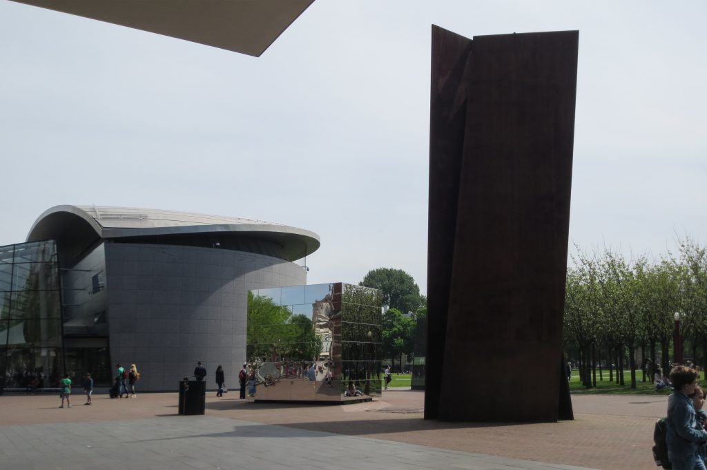

La apariencia extremadamente liviana del nuevo edificio se debe a su peculiar sistema constructivo.
El hall de entrada abierto y transparente se ha construido utilizando las últimas técnicas de construcción
en vidrio. La fachada consta de 650 metros cuadrados de vidrio doblado en frío con puerta integrada también
de vidrio, con 30 «aletas de techo», siendo la más grande de 12 metros de largo y 700mm de alto, con 20
columnas de vidrio, algunas con 9,4 metros de alto soportadas por zapatas de acero, soldadas con precisión a
la estructura principal de acero tubular que consta de secciones huecas circulares de 400 mm, todo montado en
una estructura de carga que contiene 65 toneladas de acero. Debido a la geometría compleja, las numerosas
conexiones de aletas de vidrio y las tolerancias extremadamente ajustadas, toda la estructura de acero de
60x15x10 metros se preensambló en fábrica. El radio de curvatura más pequeño del vidrio es de 11,8 metros.
De hecho, el sistema de techo-fachada no solo constituye la envoltura transparente del ala de entrada sino
que también funciona como parte de su estructura de soporte de carga. Los paneles de vidrio curvo colaboran
con las aletas de vidrio verticales, se colocan perpendiculares a ellas y actúan como contrafuertes delgados,
que a su vez funcionan junto con la estructura de acero del edificio.
En el interior, la escalera de cristal está soportada por arcos de vidrio. La mayoría de las cargas se transfieren
mediante un triple arco de vidrio laminado que también estabiliza la escalera. La conexión entre el arco de vidrio
y los largueros está unida al sitio para una transmisión de carga perfecta.
La utilización de vidrio como material de construcción es un recurso de última generación. El nuevo edificio de
entrada es la estructura de vidrio más grande de los Países Bajos en la que las aletas de vidrio, vigas y parteluces,
y las unidades de vidrio doble son elementos de la estructura principal del edificio. Para la estabilidad general del
techo, las aletas de vidrio se han conectado a la estructura de acero, trabajando juntos como una única estructura.
Materiales
En la nueva ala del museo se utilizaron principalmente hormigón armado, marco estructural de acero
y cristal. El volumen oval está recubierto exteriormente con placas de granito y su cubierta con placas de titanio.
El hall de entrada fue realizado con marco de acero y placas de vidrio dobladas en frío. Todo el vidrio utilizado en
el proyecto es vidrio con bajo contenido de hierro. El techo está compuesto por unidades de vidrio aislante y laminado,
todas de diferente ancho y soportadas por 30 aletas de vidrio triple laminado con entre capas SentryGlas, todas optimizadas
y únicas en longitud y altura. El control solar es proporcionado por un revestimiento solar de alta gama y un sutil patrón
de fritado en las unidades de vidrio doble, protegiendo el volumen de vidrio orientado al norte. Las unidades de vidrio doble
en el perímetro exterior de 1,3 metros de ancho se trenzan parcialmente en frío para encajar entre la superficie curva del
techo y el perímetro de la fachada. Una marquesina de cristal de 11 metros de largo marca la entrada y tiene un voladizo
de 1,5 metros. En el interior, la luz se filtra por el techo curvo y se distribuye a través de las paredes de fibra de
vidrio y los suelos de madera. En la escalera de vidrio se ha integrado iluminación LED que acentúa los escalones durante
la noche.